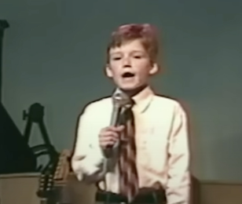
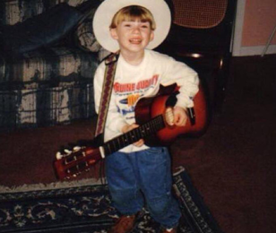

About Morgan Wallen
Morgan Wallen is an American country music singer and songwriter from Tennessee. His music blends country storytelling with influences from rock and pop.
Life and Career



Explore More
Read about his interests on the hobbies page, or visit his official website for music and tour information.